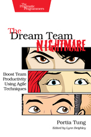

En el noveno punto, Gene Kim inicia el tramo final de los once puntos, en el que presentará los patrones de DevOps que más le gustan. En este caso, destaca la importancia de la automatización y de su implantación en las primeras etapas del proyecto.
Leer más…
Comentarios
Brendan Gregg ha escrito una serie de artículos y documentos agrupados en Linux Performance donde se investigan los cuellos de botella de los sistemas Unix y Linux.
Leer más…
Comentarios

En el viaje al FOSDEM que realizamos el pasado mes de Febrero (podéis encontrar la crónica del viaje aquí) siempre es visita obligatoria el stand de O'Reilly para aprovechar el descuento que se aplica por comprar en el Fosdem y hacerme con alguna pequeña joya.
La vista siempre se me va hacia libros de temática relacionada con mi bien amado Linux, pero últimamente también estoy cayendo en libros relacionados con Agile, DevOps, Metodologías de gestión de proyectos y equipos, etc... De entre todos los libros que me llamaron la atención encontré uno que destacó, primero por su temática (Agile) y luego por su formato.
El libro del que os estoy hablando es The Dream Team Nightmare
Leer más…
Unos cuantos recursos interesantes de git:
De todos los links anteriores, especialmente el último creo que es muy interesante ya que en su simplicidad de uso de las ramas en git permite poder hacer cualquier tipo operaciones con ello, ya sean fixes o la creación de nuevas features.
Comentarios
El octavo punto de Gene Kim sobre DevOps trata sobre cómo se integran las áreas de Seguridad informática y calidad en los flujos de trabajo de DevOps. Aunque parezca algo muy complejo de hacer, es también algo que conviene comprender correctamente para poder realizar de la forma más adecuada. Es decir, sin perder el sentido de tener procesos de calidad y seguridad, ni afectar al esfuerzo realizado para disponer de las funcionalidades en el tiempo requerido para mantener la competitividad de la organización.
Leer más…
Comentarios